7210E52 R.R. REAR WING
- Path
- Procedures > 72 PANELS AND FRAMES > 7210 REMOVING-REFITTING > 7210E EXTERNAL PARTS > 7210E52 R.R. REAR WING
- Kind
- repair procedure (removal / refitting; the operation number is the code)
- Applies to
- all engines; all production periods
- Interactive page
- https://sloeber94.github.io/elrnDB-fCrm/en/#/194001250
Applies to: all engines; all production periods
 Removing
Removing
 Refitting
Refitting- Check that the components connected are not distorted by checking the bodyshell alignment measurements using suitable equipment (gauges, templates or jigs).
- Straighten the body as necessary.
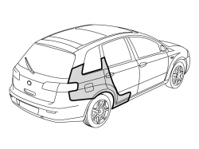
Applies to: all engines; all production periods
1. Use the hack saw following the cutting lines in the diagram.
2. Use the vibrating knife with a special blade to remove the structural sealant.
3. Use the chamfering machine to remove the spot welds shown in the diagram.
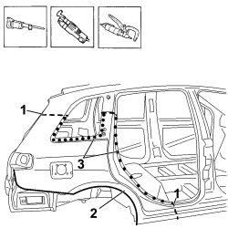
Applies to: all engines; all production periods
1. Use the drill and remove the spot welds not accessible with the chamfering machine.
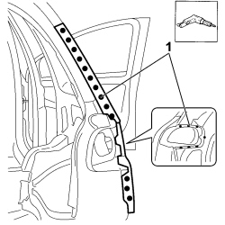
Applies to: all engines; all production periods
1. Use the drill and remove the spot welds not accessible with the chamfering machine.
2. Remove the wing.
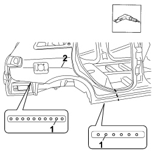
Applies to: all engines; all production periods
- Straighten the edges of the bodyshell using a hammer and dolly block.
- Remove the spot weld residues using a disc grinder.
- Use a rotary brush to clean the areas treated previously.
1. Apply electro-galvanizing paint.
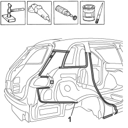
Applies to: all engines; all production periods
1. Work at the bench and cut the replacement wing making sure that a section of the panel remains for overlapping.
2. Make the holes shown using the drill.
3. Remove the anti-corrosion treatment from the areas shown on both the inside and the outside of the replacement part using the rotary brush.
- Apply electro-weldable paint to the edges involved.
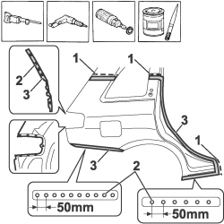
Applies to: all engines; all production periods
Refitting
Removing1. Position the wing correctly on the vehicle and secure it using self-locking clamps.
- Fit the door housing seal, the striker and the rear door.
- Fit the tailgate housing seal and the tailgate.
- Check the alignment and the surrounding gaps.
2. Use the circular saw to cut the edges of the panel so that the join line is perfect.
- Remove the replacement part, the excess panels and the components used for the adjustment.
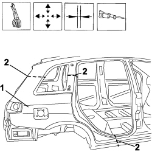
Applies to: all engines; all production periods
1. Apply structural sealant to the area shown in the diagram.
2. Renew the foam insulation in the areas shown in the diagram.
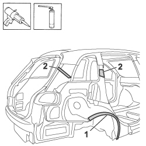
Applies to: all engines; all production periods
1 Position the wing correctly on the vehicle and secure it using self-locking clamps.
2. Use a spot welder in the areas shown in the diagram.
3. Use a MIG welder to seam weld in the join areas.
4. Use a MIG welder and weld the openings made previously in the replacement part.
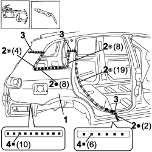
Applies to: all engines; all production periods
1. Use a MIG welder and weld the openings made previously in the replacement part.
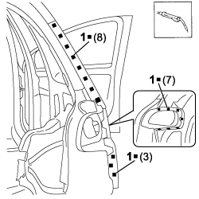
Applies to: all engines; all production periods
- Correct any distortions to the panel using a hammer and dolly block.
- Use a disc grinder to level the welding.
- Use a rotary brush to clean the areas welded previously.
1. Apply anti-oxidant protection to the areas involved in the welding.
- Seal the join lines between the replacement part and the vehicle.
- Apply underbody protection.
- Proceed with the painting stage.
2. - Apply wax protection to the inside of the wing.
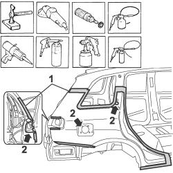